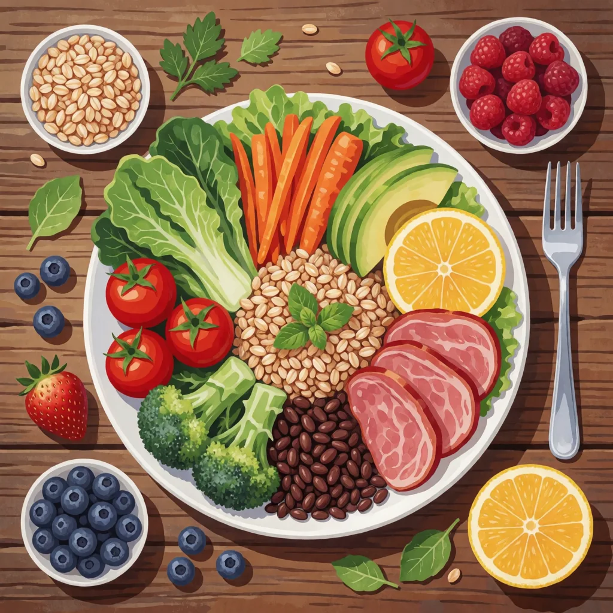

📌 這頁的定位
這是一堂操作課，不是節點工程。目標只有一個：讓你在自己的電腦（或免費雲端）上，用開源模型生出第一張圖。我們不教怎麼從零連接節點、自建工作流 — 那是另一個世界。這頁也不是要取代 Part 4 — AI 圖像生成，線上的 ChatGPT／Gemini 生圖仍然是最快上手的路；本機生圖是給「有隱私需求」或「想完全免費、無限次生成」的人多一個選項。
先搞懂：開源 vs 閉源
這頁一直講「開源生圖」，先花一分鐘把這個名詞弄清楚，後面才好懂。所謂開源、閉源，差別在於模型本身你拿不拿得到。
模型鎖在公司的伺服器裡，你只能透過它的網站或 App 使用，拿不到、也看不到模型本身。例：ChatGPT、Gemini、Midjourney。
好處免安裝、開箱即用。
代價資料須上傳雲端、有額度限制、使用規則由服務商決定。
模型公開釋出，任何人都能免費下載到自己電腦跑，甚至修改。例：Stable Diffusion、Flux。
好處免費無限次、資料留在本機、完全可控。
代價需自行準備硬體、下載模型並完成安裝設定。
為什麼醫療人員要學本機生圖
線上生圖工具（ChatGPT、Gemini、Google Flow）既方便又快速，但在三個面向上有其限制，而這三點對醫療場景尤其重要。
本機生圖時，你輸入的文字、上傳的參考圖完全不會離開你的電腦，不上傳任何雲端伺服器。這正是 Part 3 — AI 安全與隱私 一直強調的原則 — 涉及病人、個資、臨床影像的素材，最安全的做法就是根本不上傳。
模型下載到本機後，生成完全免費，沒有每日額度、沒有 credits、沒有訂閱。可不限次數生成，除電費外沒有額外成本。
模型、參數、風格皆由你掌控：固定參數即可重現同一種畫風、以 LoRA 切換風格、批次自動產生大量配圖。這是 ChatGPT／Gemini 無法提供的控制程度。（線上工具確實會封鎖寫實血腥類內容，但該類影像本非衛教所需。）
⚖️ 誠實講缺點
本機生圖需要一張夠力的顯示卡（見下方硬體門檻），而且比線上工具難上手。如果只是偶爾製作衛教圖，Part 4 的線上工具已足夠，不需特地安裝這套工具。本頁適合的對象是：① 有明確隱私顧慮、素材不能上雲 ② 生圖量大、線上額度不敷使用 ③ 想深入了解開源 AI 的運作方式。三者符合其一，才建議繼續往下閱讀。
開源模型能生成什麼
以下影像皆以開放權重（open-weights）模型（Boogu／Krea2／Z-Image）生成，每張各使用一句英文 prompt、且刻意不含文字。重點不在於「線上工具做不到」— 乾淨的圖線上同樣能生成、甚至表現更好；而在於這類模型可下載到本機執行：在本機執行就免費、可無限次產生、資料留在自己手上，能力也涵蓋從溫馨插畫到照片級寫實的範圍。點圖可放大。
溫馨插畫風
適合衛教海報主視覺、社群貼文配圖、簡報背景，再用 Canva 疊上文字（開源模型不擅長把字寫進圖裡，見模型段實測）。

照片級寫實
開放權重模型不僅能畫插畫，寫實表現同樣出色，可作為衛教簡報與社群貼文的圖庫（stock photo）替代素材。畫面中的人物皆為 AI 合成、並非真實病人，能降低真人肖像與圖庫授權的風險，也呼應 Part 3「不動用真實病人照片」的原則。但正式對外發布前，仍須確認所用模型的授權條款與院內使用規範。
⚠️ 再逼真也要人工檢查：AI 生圖的常見錯誤
上方「洗手微距」乍看專業，但仔細觀察會發現那雙手有六根手指。手部（手指數目、關節、交疊處）是 AI 生圖最容易出錯的部位，文字、對稱物件與細小結構也常有瑕疵。這類錯誤開源與線上工具都會發生，而且畫面越寫實越容易被忽略。凡是要對外發布、尤其醫療衛教用途的影像，成品務必逐一檢查後再採用。
ComfyUI 是什麼
ComfyUI 是一套免費、開源的 AI 生圖軟體，裝在自己的電腦上跑。它最為人所知的畫面是由許多連線組成的「節點」，初看容易令人卻步 — 但你完全不需要自行接線：軟體內建現成範本，只要載入範本、修改少數文字、執行生成即可產出圖像。
免費、無限次、資料留在本機、模型與參數完全可控、開源社群龐大。
要有獨立顯示卡、要下載幾 GB 的模型檔、介面比線上工具複雜。第一次安裝約需半小時到一小時。
先確認你的電腦能不能跑（分流）
本機生圖主要靠顯示卡（GPU）來運算，對顯示卡的要求遠高於 CPU 或記憶體（技術上 CPU 也能運算，但慢到不實用）。因此第一步並非急著下載，而是先確認電腦是否配備足夠效能的顯示卡。
先分清楚兩種顯示卡
一張單獨的晶片，有自己的專屬記憶體（VRAM），運算力強。桌機／電競筆電常見的 NVIDIA GeForce（如 RTX 4060、4070）就是這類。本機生圖需要的是這種。
直接整合在 CPU 裡、跟系統共用記憶體的顯示功能（如 Intel UHD Graphics）。一般文書筆電多半只有內顯 — 能上網、播放影片，但難以順利運行生圖模型。
＊ Apple 晶片、Intel Arc、AMD 等非 NVIDIA 路線，ComfyUI 技術上也支援，但安裝較複雜、相容性與速度不一。本課以最穩定的 NVIDIA 獨立顯示卡為準，沒有就改用雲端（路線 B）體驗。
Ctrl + Shift + Esc 開「工作管理員」→ 點「效能」分頁 → 左邊看有沒有列出「GPU」。如果同時出現兩個 GPU（一個是 Intel／AMD 內顯，一個是 NVIDIA），或列出 NVIDIA GeForce／RTX 字樣，代表你有獨立顯示卡。只看到 Intel(R) UHD / Iris 這類，就是只有內顯。
硬體門檻（NVIDIA 獨立顯示卡）
📅 規格資訊更新於 2026 年 7 月 — 以 ComfyUI 官方系統需求 為準。
| VRAM（顯示卡記憶體） | 建議拿來跑 |
|---|---|
| 4 GB（最低） | 勉強能啟動，只順跑最輕量的舊模型 |
| 8 GB（入門舒適） | 順跑 SD 1.5 這類經典模型，入門足夠 |
| 12 GB | 畫質更好的 SDXL 模型跑起來舒服 |
| 16 GB 以上 | 跑最新的 Flux 等大型模型最順 |
💾 硬碟空間：模型以「GB」為單位計算
ComfyUI 桌面版本體與執行環境約需數 GB，加上預設模型後可能達十幾 GB；但真正佔用空間的是模型檔：一個 SD 1.5 約 2–7 GB、一個 SDXL 約 6–7 GB、一個 Flux 動輒 12–24 GB。下載數個不同畫風的模型後，硬碟空間很快便會減少數十 GB。建議預留 50 GB 以上的可用空間，並盡量安裝於容量較大的磁碟，避免佔滿系統碟。作業系統需 Windows 10 以上（建議 11）。
🚦 走哪條路？
- 有 NVIDIA 獨立顯示卡（8 GB 以上最理想） → 走 路線 A：桌面版安裝，在自己電腦上跑。
- 只有內建顯示卡、使用非 NVIDIA 顯示卡、或筆電效能不足 → 前往 路線 B：改用雲端（Comfy Cloud），免安裝、免顯示卡，同樣能體驗 ComfyUI。（Apple Silicon Mac 亦可用桌面版，見下方補充。）
路線 A：桌面版安裝 + 跑出第一張圖
過去安裝 ComfyUI 需自行建置 Python 環境，對非工程背景的使用者門檻偏高。現在官方推出 ComfyUI Desktop（桌面版），單一安裝檔便會自動裝好 Python 與繪圖運算所需的元件，與安裝一般軟體無異。
安裝步驟
到官網 comfy.org/download 下載對應你系統（Windows／macOS）的桌面版安裝檔。
執行安裝檔，跟著精靈按下一步即可。它會自動下載並設定 Python 與繪圖運算元件，全程約 30–45 分鐘（視網速而定），連同預設模型約佔十幾 GB 空間。此過程讓其自動執行即可。
開啟 ComfyUI 後，從選單找到範本（Templates），選最基本的 Text to Image（文字生圖）。畫面上會出現一組已連接好的節點 — 無需理會這些連線，也不必調整。第一次載入時，通常會提示你下載一個預設模型，依提示確認下載即可。
在畫面上找到寫著英文提示詞的框（正向提示詞），將其中文字替換為所需內容，按下 Queue（排入生成）。約數秒至數十秒後，右側便會出現你的第一張本機生成圖。
認識畫面上的幾個主要區塊（概要）
你不需要理解每條連線，但認得這四個區塊，日後需要調整時才知道從何著手：
- 模型載入框（Load Checkpoint） — 決定用哪個模型畫圖，像是選哪位畫師。
- 正向提示詞（Positive） — 你「要」畫面出現什麼，主要就是改這裡。
- 反向提示詞（Negative） — 你「不要」出現什麼（例如 blurry 模糊、extra fingers 多手指）。
- 出圖框（Save / Preview Image） — 成品出現的地方，會自動存檔到本機。
模型從哪來
ComfyUI 本身只是「畫圖的軟體」，真正決定畫風與品質的是模型（model／checkpoint）。桌面版第一次會幫你下載一個預設模型，夠你跑出第一張圖；想換不同畫風，就得自己再下載別的模型。
先認識 Stable Diffusion 與它的世代
Stable Diffusion 是 2022 年開源釋出的生圖模型，它掀起了「在自己電腦上生圖」的整波風潮 — 前面講的開源生圖，講的幾乎都是它與它的後代。因為開源，全世界的社群不斷拿它改良、推出新版本，於是就有了「世代」之分。你會一直看到的三個名字，其實是同一條演進線上的不同階段：
- SD 1.5（2022）— 最經典、最省資源的元老版，社群資源最多，8 GB 顯示卡就能順跑，入門首選。
- SDXL（2023）— Stable Diffusion 的高畫質大改版，細節與構圖更好，建議 12 GB 以上。
- Flux（2024）— 由原 Stable Diffusion 核心團隊出走另組的 Black Forest Labs 推出的新家族，對文字與複雜構圖的理解最強，但也最吃資源（建議 16 GB 以上，8 GB 可跑但慢）。
可以把它們想成同一款軟體的「版本演進」：越新的模型能力越強、畫質越好，代價是越耗用顯示卡資源。初學者由 SD 1.5 入門，熟悉後再逐步嘗試較新的模型。
- Boogu Image（開放權重；授權與檔案以 官方 Hugging Face repo 為準）— 作者實測文字渲染表現最佳，分 Base／Turbo／Edit 三種，ComfyUI 免裝外掛就能跑
- Qwen-Image（阿里巴巴，Apache 2.0）— 也很擅長把文字畫進圖裡，構圖創意在同類裡領先
- Z-Image（阿里巴巴 Tongyi）— 主打輕量快速、消費級顯示卡即可執行；但實測繁體中文容易輸出為簡體字，用於中文設計時須特別留意
- Krea 2（12B，開放權重，Comfy-Org 提供本機版）— 美感最強的開放權重模型，但幾乎不會寫中文字，適合純畫面、文字後製再加
- FLUX.2（Black Forest Labs）— Flux 的新一代，畫質與多圖參考更強
🀄 做中文衛教前先知道：開源模型還「寫不好」繁體中文
用開源模型直接在圖上生成繁體中文，目前很不可靠 — 筆畫多的字（濱、廳、衛、醫、濟、膚…）幾乎無一正確，密集排版也常出現重複、錯字、互相擠壓。這是用 53 組 prompt 實測五大模型後的結論：大標題（4 字以內）堪用，長文字與精確排版務必後期手動加 — 用 Canva 疊繁中文字最穩，跟 Part 4、Google Flow 的作法一致（引號逐字校對、關鍵字後製）。
延伸閱讀（實測含大量對比圖，開新分頁）：
- 2026 開源 T2I 繁體中文實測：五大模型誰寫得最正確？ — ERNIE／Qwen／Boogu／Z-Image／KREA 2，53 組 prompt 全面比較
- Boogu Image 0.1 實測：開源文字渲染新標竿？ — Base／Turbo／Edit 三變體、10 組 prompt
- KREA 2 實測：中文 Prompt 能用嗎？四種官方 LoRA 風格全比較
其實不只繁體中文 — 上面兩張，一張是模型嘗試標示英文器官名稱、一張是模型自行加入文字，結果皆糊成亂碼。這正是圖上文字一律後製的原因：畫面交由開源模型生成，文字則以 Canva 等工具另行疊加。
去哪下載模型
建議用 Hugging Face — AI 界最大的開源模型平台，Stable Diffusion、Flux 和上面提到的新模型，官方版都在上面，來源清楚。下載模型檔（通常是 .safetensors 格式）後，放進下一節說的對應資料夾、重新整理，就能在模型載入框選到。
網路上還有其他規模更大的模型分享站，但內容龐雜、混有大量成人與版權不明的內容 — 醫療衛教用途先從 Hugging Face 的官方模型入手即可，來源單純，也較無誤觸不當內容的風險。
模型檔要放哪個資料夾
下載回來的檔案不是隨便丟就好 — ComfyUI 靠「放對資料夾」來認出每種模型。安裝目錄下有個 models 資料夾，裡面依類型分好子資料夾，通常對應如下（桌面版可從選單直接「開啟模型資料夾」，不用自己找路徑）：
| 資料夾 | 放什麼 |
|---|---|
models/checkpoints | 主模型（checkpoint） — 最常下載、最常放的就是這裡，SD 1.5／SDXL 的完整模型都放這 |
models/diffusion_models | 部分新架構模型（如 Flux 的 diffusion model 檔）會單獨放這，有時也叫 unet |
models/text_encoders舊版相容名稱： models/clip | CLIP／文字編碼器（text encoder） — 負責「讀懂你的提示詞」。SD 1.5 這類舊模型多半已內含不用管；但 Flux、Qwen-Image、SD3 這類新架構要另外下載 CLIP／T5 文字編碼器放這，缺了就無法生成。 |
models/vae | VAE 檔 — 影響成品的色彩與細節；有些主模型已內含就不用另放，有些（尤其 Flux）要另外下載對應的 VAE 放這 |
models/loras | LoRA — 一種小型「風格外掛」，掛在主模型上微調畫風（進階再研究，入門用不到） |
⚖️ 授權與用途提醒
開源不等於「什麼都能做」。每個模型有自己的授權條款（有些禁商用、有些禁特定用途），生成的圖若要用於正式衛教文宣或對外發布，請先查看該模型的授權說明。醫療衛教內容也一樣要守 Part 3 的原則：不生成可辨識的真實病人臉孔、不編造醫療數據。
路線 B：沒有獨立顯示卡就上雲端
即使沒有足夠效能的顯示卡，一樣能體驗 ComfyUI — 將運算交由雲端執行即可。其原理相同：你在瀏覽器上操作，實際運算則在對方的高效能顯示卡上進行，你的電腦只要能開啟網頁即可，免安裝、免顯示卡。這類服務有數家，初學者建議從官方的 Comfy Cloud 入手。
首選：Comfy Cloud（官方雲端）
ComfyUI 官方自己推出的雲端版 Comfy Cloud，對新手有兩個關鍵好處：
由同一官方團隊開發，操作、範本、節點與你在路線 A 學到的桌面版完全一致 — 學過的操作可直接沿用，無須重新適應另一套介面。
用 Google 帳號登入即自動套用免費層，無須綁定信用卡；且僅在「實際生成」時計費，於畫面上搭建流程、調整參數的時間不消耗額度。
⚠️ 上雲就失去「資料不出機器」的隱私優勢
不論哪一家雲端，運算都在對方的伺服器上進行，代表你的輸入與上傳的圖會離開你的電腦 — 這正是本機生圖最大的優勢，改用雲端後便不復存在。因此涉及病人資料、個資、臨床影像的素材，一律不要上傳至任何雲端平台，回到 Part 3 的三秒檢查。若須處理敏感素材，應採用路線 A 的本機生圖。
大致怎麼用（以 Comfy Cloud 為例）
- 用 Google 帳號登入官方雲端。
- 載入內建的 Text to Image 範本（跟桌面版同一個）。
- 改提示詞、按生成，雲端跑完直接在瀏覽器看圖、下載。
Ctrl + Shift + Esc → 效能分頁，確認電腦是否配備 NVIDIA 獨立顯示卡。若有，前往 comfy.org/download 下載桌面版並開始安裝，生成第一張「完全不上雲」的圖；若無，以 Google 帳號登入官方 Comfy Cloud，載入 Text to Image 範本執行一次。無論採用哪條路線，目標都是今天親手以開源模型生成你的第一張圖。